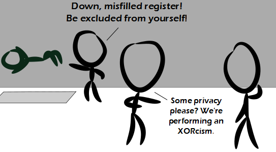

Comic JK 850
When I Feel Like It
⇤
<
?
>
⇥

⇤
<
?
>
⇥
Forum
.
RSS
.
Digg
.
Facebook
.
Reddit
.
Twitter
.
Stumbleupon
Enter your thoughts on number 850 here. Please, no spamming, trolling, or preaching. But he did write a subroutine to do it safely and successfully. >This refers to a version of the hover text which appeared for three minutes, "if God had just made a 'set to unpossessed' instruction this wouldn't be necessary." Back when I used to do assembly I used to always xor a register to itself to ensure it was zero before I used it - even in cases that wasn't necessary. > And back then it made sense. Now, "mov AX, 0" is exactly as fast as "xor AX, AX". XOR hasn't been faster since the advent of the 80486 processor family, I think. >> It's still a bit faster because it's a shorter op-code as it has no immediate 32 bit value. Specifying registers takes 3 bits in an op-code. >>> actually movzbl ax,0 only need a 1 byte constant I never understood this. What's faster, 'xor AX, AX' or 'and AX, 0' (if there's a difference). More importantly, WHY? >Well, 'xor AX, AX' uses fewer bits. >> "and AX, 0" requires 32 bits of zero in the op-code, and the machine needs to read one word more than for a register-only op-code. I XORcised your mother because she was misfilled with your man juices.